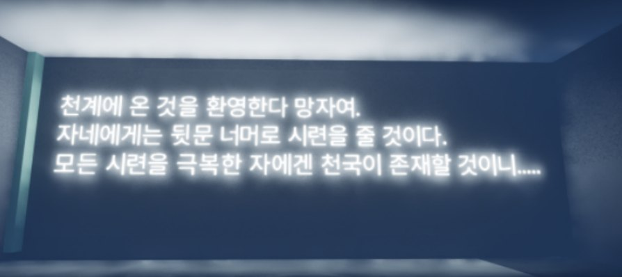
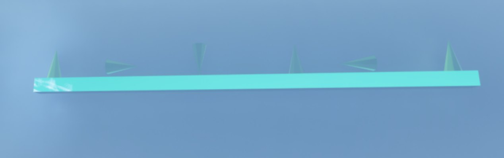
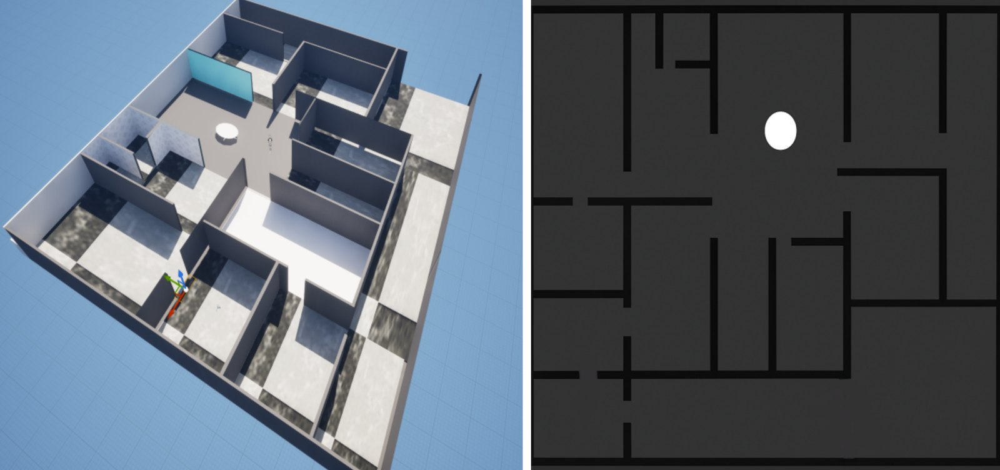

지쟈스 크라이스트
기간
2025.10
분류
3D방탈출 퍼즐
장르
3D 방탈출 퍼즐
형태
1인 개발, 언리얼 수업 과제
도구
Unreal Engine 5, Blueprint
한 줄 소개
천계에서 퍼즐을 풀고 열쇠를 모아 탈출구를 찾는 3D 방탈출 게임




죽은 사람 중 시련을 견딘 자만 다시 태어난다는 설정으로, 천계에서 퍼즐을 풀고 곳곳에 숨긴 열쇠를 모아 탈출구를 찾는 방탈출 게임입니다. 경건한 분위기와 가볍게 즐기는 퍼즐을 목표로 했습니다.
개발
- 문: E키 상호작용으로 열고 닫습니다. 타임라인과 FlipFlop으로 문이 천천히 여닫히게 하고, Lerp로 회전 각도를 조절했습니다.
- 방향 퍼즐: 가까이 가서 F키를 누르면 위젯이 열리고, 입력 완료 버튼이나 F키로 닫힙니다. 상하좌우 버튼을 1~4로 받아 누른 순서대로 4자리 비밀번호로 바꾼 뒤 정답과 비교합니다.
- 힌트: 원뿔 기둥을 화살표처럼 배치해 눌러야 할 방향을 알려 줍니다.
- 열쇠: 열쇠 개수를 세고, 같은 열쇠는 중복으로 세지 않게 했습니다. 열쇠를 모두 모으면 탈출구로 나가는 엔딩입니다.
- 맵: 넓은 플로어를 파티션처럼 나눠 하나의 큰 방으로 구성하고, 오브젝트를 하나씩 배치했습니다. 플레이어용 지도도 직접 그렸습니다.
남은 문제: 퍼즐을 한 번 푼 뒤 캐릭터가 움직이지 않는 버그는 끝내 고치지 못했고, 배열 변환 과정에서 올바른 방향을 눌러도 오답으로 처리되는 문제가 있었습니다.